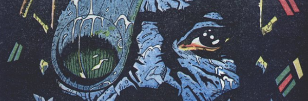

Starship Troopers meets Apocalypse Now, directed by George A. Romero. This very-fish-out-of-water tale sees the ingenue squaddie Danny Franks recruited into the titular Bad Company, a squad of psycopathic veterans battling the alien Krool on the planet Ararat.
As Apocalypse Now is less the story of Benjamin Willard as it is that of Colonel Kurtz (layered with the madness of war, an examination of what one might consider sane or insane and the passing of the torch from one generation to another), Bad Company is very much embroiled not just in the journey of Danny Franks but also in understanding the motivation of Kano (the seemingly morally bankrupt leader of the Company).
Subsequent series increasingly drop standard continuity in favor of more experimental narrative formats that play with the concept of reality.
Art by Jim McCarthy
| Story Title | Parts | Pages | w indicates a wraparound coverCovers | Year(s) | Issues | Writer | Artist | Colourist | Letterer |
|---|---|---|---|---|---|---|---|---|---|
| [Book I] | 20 | 117 | 501: Brett Ewins [b&w reprint in 2KA'89] 506: Brett Ewins 508: Brett Ewins 510: Brett Ewins 512: Jim McCarthy 516: Brett Ewins 6 | 1986-1987 | Reprints: M4.09‑M4.15 FCBD6‑QR (partial: ep.1) 500-519 | Peter Milligan | Brett Ewins (P) Jim McCarthy (I)various | [b&w] | Tom Frame |
| Bad Company II: The Bewilderness | 10 | 62 | 548: Brett Ewins 553: Brendan McCarthy 2 | 1987-1988 | 548-557 | Peter Milligan | Brett Ewins Jim McCarthyvarious | [b&w] | Tom Frame |
| Bad Company II: The Krool Heart | 10 | 61 | 576: Brett Ewins 1 | 1988 | 576-585 | Peter Milligan | Brett Ewins Jim McCarthyvarious | [b&w] | Tom Frame |
| Young Men Marching | 1 | 8 | 0 | 1988 | Reprints: M4.152KA'89 | Peter Milligan | Brett Ewins Jim McCarthyvarious | <-- | Tom Frame |
| Ararat / Simply | 1 | 4 | 0 | 1988 | Reprints: M4.15601 | Peter Milligan | Brett Ewins (P) Steve Dillon (I)various | [b&w] | Tom Frame |
| Kano | 10 | 60 | 829: Brett Ewins 836: Brett Ewins 2 | 1993 | 828-837 | Peter Milligan | Brett Ewins Jim McCarthyvarious | <-- | Tom Frame |
| Down Among the Dead Men | 1 | 5 | 0 | 2000 | p2001 | Peter Milligan | Brett Ewins (P) Jim McCarthy (I)various | [b&w] | Ellie de Ville |
| [2002] | 6 | 31 | 1274: Jock and Chris Blythe 1 | 2001-2002 | p2002, 1273-1277 | Peter Milligan | Brett Ewins (P) Jim McCarthy (I)various | [b&w] | Tom Frame |
| b.A.d. COMPANY | 1 | 4 | 0 | 2002 | M4.15 | Alan Grant John Wagnervarious | Carlos Ezquerra | [b&w] | Tom Frame |
| First Casualties | 12 | 74 | 1951: Rufus Dayglo 1960: Brendan McCarthy 2 | 2015 | Reprints: FCBD6 (partial: ep.1)1950-1961 | Peter Milligan | Rufus Dayglo Jim McCarthyvarious | [b&w] | Simon Bowland |
| Terrorists | 12 | 73 | 2064: Rufus Dayglo & Dom Regan 2071: Rufus Dayglo & Dom Regan 2 | 2017-2018 | 2061-2072 | Peter Milligan | Rufus Dayglo | Pippa Mather & Dominic Regen various | Simon Bowland |
| >> Text Stories << | |||||||||
| Ararat / Danny's Story | 1 | 8 | 0 | 1989 | Reprints: M4.152KA'90 | Peter Milligan | Brett Ewins Jim McCarthyvarious | [b&w] | n/a |
| >> Posters / Teasers << | |||||||||
| Bad Company - Join Them | 1 | 2 | 0 | 1986 | 494 | n/a | Brett Ewins (P) Jim McCarthy (I)various | [b&w] | n/a |
| The End? | 1 | 1 | 0 | 1987 | 519 | n/a | Brett Ewins (P) Jim McCarthy (I)various | [b&w] | n/a |
Star Scan.Bad Company II - The Bewilderness | 1 | 1 | 0 | 1987 | 542 | n/a | Brett Ewins | <-- | n/a |
| Bad Company II: The Krool Heart | 1 | 1 | 0 | 1988 | 572 | n/a | Brett Ewins | <-- | n/a |
| Sheeva | 1 | 1 | 0 | 1988 | 578 | n/a | Brett Ewins | <-- | n/a |
| [Protoid] | 1 | 1 | 0 | 1988 | 581 | n/a | Ron Merlin | <-- | n/a |
Danny Franks.From a Raw to a Scream | 1 | 1 | 0 | 1988 | 587 | n/a | Macasso | <-- | n/a |
| Kano | 1 | 1 | 0 | 1988 | 591 | n/a | Brendan McCarthy | <-- | n/a |
| Bad Company: Kano | 1 | 1 | 0 | 1993 | 826 | n/a | Brett Ewins | <-- | n/a |
| Bad Company | 1 | 1 | 0 | 1999 | p2000 | n/a | Brett Ewins | Chris Blythe | n/a |
From Great Moments in Thrill‑PowerBad Company: The Secret of the Black Box | 1 | 1 | 0 | 2007 | 1550 | n/a | Richard Elson | <-- | n/a |
| Fall in with… Bad Company | 1 | 1 | 0 | 2015 | Reprints: SFS21M360 | n/a | Rufus Dayglo Jim McCarthyvarious | <-- | n/a |
| Bad Company: Returning Back to the Front | 1 | 1 | 0 | 2017 | 2055 | n/a | Rufus Dayglo Dominicvarious | <-- | n/a |
| >> Features << | |||||||||
Subtitled: "Charity Work‑In Breaks Records".Bad Company - Do Good | 1 | 1 | 0 | 1988 | 601 | editorial | photos | [b&w] | n/a |
| Company Records | 1 | 7 | 0 | 1988 | WS1 | unknown | Jim McCarthy | [b&w] | n/a |
| Data Bytes: Bad Company | 1 | 1 | 0 | 1999 | p2000 | editorial | Brett Ewins | <-- | n/a |
From Hall of HeroesBad Company | 1 | 2 | 0 | 2003 | M208 | David Bishop | Reprint. Brendan McCarthy | <-- | n/a |
From New ComicsBad Company: Back to the Front! | 1 | 3 | 0 | 2015 | M365 | Matthew Badham | promo graphics | <-- | n/a |
| year | episodes | pages |
| 1984 | 0 | 0 |
| 1985 | 0 | 0 |
| 1986 | 3 | 18 |
| 1987 | 24 | 143 |
| 1988 | 15 | 91 |
| 1989 | 0 | 0 |
| 1990 | 0 | 0 |
| 1991 | 0 | 0 |
| 1992 | 0 | 0 |
| 1993 | 10 | 60 |
| 1994 | 0 | 0 |
| 1995 | 0 | 0 |
| 1996 | 0 | 0 |
| 1997 | 0 | 0 |
| 1998 | 0 | 0 |
| 1999 | 0 | 0 |
| 2000 | 1 | 5 |
| 2001 | 1 | 6 |
| 2002 | 6 | 29 |
| 2003 | 0 | 0 |
| 2004 | 0 | 0 |
| 2005 | 0 | 0 |
| 2006 | 0 | 0 |
| 2007 | 0 | 0 |
| 2008 | 0 | 0 |
| 2009 | 0 | 0 |
| 2010 | 0 | 0 |
| 2011 | 0 | 0 |
| 2012 | 0 | 0 |
| 2013 | 0 | 0 |
| 2014 | 0 | 0 |
| 2015 | 12 | 74 |
| 2016 | 0 | 0 |
| 2017 | 1 | 6 |
| 2018 | 11 | 67 |
| 2019 | 0 | 0 |
| 2020 | 0 | 0 |
Comic strip data (excludes other content):